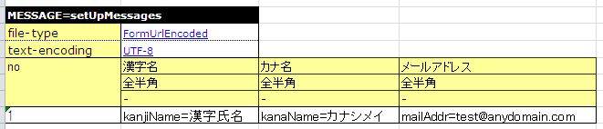

Data Formatter Expansion¶
The specifications of the formatter functions provided in this sample are described.
For an overview of the formatter functions and more information on basic general data formatting functions, see the description for general data formatting functions in the Nablarch Application Framework manual.
Summary¶
To use a different formatter from those provided by Nablarch (ex: Json format or Xml format), add a data formatter.
In this sample, assume creating a formatter corresponding to the data format (application/x-www-form-urlencoded) that combines Key item=Value item with &, such as a HTTP POST parameter.
Delivery package¶
The functions are provided in the below package.
please.change.me. core.dataformat
please.change.me. core.dataformat.convertor
please.change.me. test.core.file
Structure of the FormUrlEncoded data formatter¶
The FormUrlEncoded data formatter handles the data used in application/x-www-form-urlencoded. This data is expressed by connecting sets of names and values using the equal to sign and then linking them with the AND symbol (&), such as name1=value1 & name2=value2. Multiple values can also be handled with the same key.
Encode a URL in the value. For keys, a URL cannot be encoded according to the format definition of general data formats, and special characters cannot be used for a key string.
The following is a list of classes used in this function.
Package name Class name Summary please.change.me. core.dataformat FormUrlEncodedDataFormatterFactory please.change.me. core.dataformat FormUrlEncodedDataRecordFormatter please.change.me. core.dataformat.convertor FormUrlEncodedDataConvertorFactory please.change.me. core.dataformat.convertor FormUrlEncodedDataConvertorSetting please.change.me. test.core.file FormUrlEncodedTestDataConverter
How to Use¶
How to Use the FormUrlEncoded data formatter¶
When using a formatter factory class created in the business application, the following configuration must be made.
<component name="formatterFactory" class="please.change.me.core.dataformat.FormUrlEncodedDataFormatterFactory"/>
Description example of format definition file¶
An example describing the format definition file corresponding to the sample source code is shown below.
# # Directive definition section # file-type: "FormUrlEncoded" # Form URL encoded format file text-encoding: "UTF-8" # Character encoding of the string type field # # Data record definition section # [data] 1 key1 X # Item 1 2 key2 X # Item 2
Field type and field converter definition list¶
This section describes the field types and field converters used in the FormUrlEncoded data formatter.
Field type
Type identifier Java type Details X, N, XN, X9, SX9 String Arguments are not required as none of the type identifiers have the concept of field length.
Field convertor
Converter name Java type (before and after conversion) Details Literal value Object <-> Object number String <-> BigDecimal signed_number String <-> BigDecimal
When handling multiple values with the same key¶
When the same key handles multiple values, data is stored in the String array format. Multiplicity must be set in the format definition file. For the definition method, see the general data formatting functions in the Nablarch Application Framework manual.
How to write test data¶
When using the FormUrlEncoded data formatter, the input data must be URL encoded. However, writing URL-encoded data directly into an Excel file is not practical in terms of readability, maintainability and work efficiency. Therefore, the test data converter is specified as shown in the following example.
For test data converters, see How to use the automatic test framework in the Programming/Unit test guide.
Component configuration file
Add the following settings in the component configuration file on the test side.
<!-- Test data converter definition --> <component name="TestDataConverter_FormUrlEncoded" class="please.change.me.test.core.file.FormUrlEncodedTestDataConverter"/>Excel file
“FormUrlEncoded” is specified in the file-type as follows, and entered in the Key-Value format for each item as test data.
In this case, the test framework calls FormUrlEncodedTestDataConverter when the test data is read, and the following data is input to the FormUrlEncoded data formatter as a result.
kanjiName=%E6%BC%A2%E5%AD%97%E6%B0%8F%E5%90%8D&kanaName=%E3%82%AB%E3%83%8A%E3%82%B7%E3%83%A1%E3%82%A4&mailAddr=test%40anydomain.com